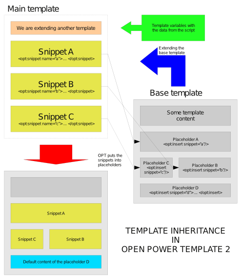

- 3.9.4. Template modularization
3.9.4.2. Template inheritance - 3.9.4.1. Template inclusion
« Previous - 3.9.5. Quirks mode
Next »
3.9.4.2. Template inheritance
Template inheritance is a relatively new concept of modularizing the templates. It offers you another way to compose the output document from several template files and is very similar to the concepts that can be found in the object-oriented programming. In this chapter we are going to describe the implementation of template inheritance in Open Power Template.
General concepts
Below, you can find a picture that illustrates how the inheritance really works.

The picture shows the situation with two templates. The first one, called base template, defines the structure of the output code and leaves spare placeholders. The placeholders may be filled with the default content. If we used the base template directly, we would see no absolutely no difference, when compared to the case without the placeholders. However, the things change if we run the template inheritance. Here, another template (called main template), extends the base template and defines the snippets with a new content for the placeholders. After the compilation, we get a complete output. The extended placeholders are filled with the new content from main template, whereas the rest of the placeholders and the output code structure is taken from the base template.
If you already know object-oriented programming, you should see many familiar issues here. The snippets can be treated as methods, and the template as a normal class.
Template inheritance in OPT
Template inheritance can be processed at the two different stages: the compilation and the execution. Both of them have their advantages and disadvantages. OPT features the first model. The compiler produces only one file with the inherited templates already concatenated. The benefits of this model are:
- Inherited templates are executed faster that their counterparts constructed with opt:include instruction.
- The snippets from the extending template actually see and can interact with the code structure in the base template. For example, if a snippet with a section is put in the placeholder that lies in another section, the sections will be connected with a relationship.
- The templates in the inheritance chain share the same set of local template variables.
The disadvantage is that the name of the extended template must be known before the compilation and cannot be changed later. In other words, we cannot load the name from a variable or generate dynamically. Fortunately, OPT is free of these drawbacks and in spite of processing the inheritance during the compilation, the overall process can be still dynamic and your script may choose the template to be inherited at any moment.
The template inheritance chain may be as long as you want. You may create a template that extends a template that extends another template. Moreover, we do not need to extend a physical template file, because OPT supports also extending snippets.
Template inheritance in practice
So far, we have been introduced the theory of OPT inheritance model and we are now ready to see, how to use it in real templates. The inheritance uses the two basic instructions for copying a part of the source template into another place: opt:snippet and opt:insert. First, let's build the base template base.tpl:
<opt:root> <html> <head> <title>My website - {$title}</title> </head> <body> <div id="header"> <opt:insert snippet="header"> <h1>My website</h1> </opt:insert> </div> <div id="content"> <opt:insert snippet="content"> <p>Sorry, no content defined.</p> </opt:insert> </div> <div id="footer"> <p>Copyright You {range(2009)}</p> </div> </body> </html> </opt:root>
This template defines two placeholders: header and content, so we can overwrite the standard header and content. The news module may fill them with custom content in the template news.tpl:
<opt:extend file="base.tpl"> <opt:snippet name="content"> <opt:insert snippet="hello_text" /> <h1>News</h1> <div class="news" parse:id="'e'~$news.id" opt:section="news"> <h1>{$news.title}</h1> <p>{$news.body}</p> </div> </opt:snippet> </opt:extend>
Once we compile and execute this template, we should get something like this:
<html> <head> <title>My website - News</title> </head> <body> <div id="header"> <h1>My website</h1> </div> <div id="content"> <h1>News</h1> <div class="news" id="e2"> <h1>New articles</h1> <p>Today, the new articles have been published. We encourage you to read them, because they are really brilliant!</p> </div> <div class="news" id="e1"> <h1>Hello world!</h1> <p>Welcome to my new website!</p> </div> </div> <div id="footer"> <p>Copyright You 2009</p> </div> </body> </html>
However, please notice that news.tpl defines another placeholder in the snippet, hello_text. Let's think, how we could possibly use it. So far, we can create a template for the news module, but now we want to publish them also on the index page. Suppose that you wish to display some form of invitation with the website users above the news list, but you do not want it to appear, if the user visited the news module directly. To achieve this, we may extend news.tpl with index.tpl and define the content for hello_text placeholder. Moreover, we will modify the header a bit:
<opt:extend file="news.tpl"> <opt:snippet name="hello_text"> <p>Welcome to my website!</p> </opt:snippet> <opt:snippet name="header"> <h1>My website</h1> <p>Hi everyone!</p> </opt:snippet> </opt:extend>
Now, if the user reads the news through the index page, he or she should see the following content:
<html> <head> <title>My website - News</title> </head> <body> <div id="header"> <h1>My website</h1> <p>Hi everyone!</p> </div> <div id="content"> <p>Welcome to my website!</p> <h1>News</h1> <div class="news" id="e2"> <h1>New articles</h1> <p>Today, the new articles have been published. We encourage you to read them, because they are really brilliant!</p> </div> <div class="news" id="e1"> <h1>Hello world!</h1> <p>Welcome to my new website!</p> </div> </div> <div id="footer"> <p>Copyright You 2009</p> </div> </body> </html>
Remember that you can modify any template in the inheritance chain at any time. The templates that depend on it will notice the change automatically and recompile.
Overwriting the snippets
Suppose that the author of news.tpl template forgot to create a placeholder hello_text in it, he went off on a long holiday and left us alone. We would rather not touch his code, but still want to display the introductory text. Don't worry, there is still a way to do this. Our index.tpl may overwrite the snippet content from the news.tpl file, but its content is not lost. Using opt:parent tag, we can still access it:
<opt:extend file="news.tpl"> <opt:snippet name="content"> <p>Welcome to my website!</p> <opt:parent /> </opt:snippet> <opt:snippet name="header"> <h1>My website</h1> <p>Hi everyone!</p> </opt:snippet> </opt:extend>
The effect will be exactly the same. What if the content snippet is not overwritten? There are two possible behaviors. If the placeholder does not define a default content, opt:parent does nothing. Otherwise, OPT inserts the default placeholder content on opt:parent. Sometimes, this is not a behavior we would expect, so we can disable it in the placeholder:
<opt:insert snippet="content" ignoredefault="yes"> <p>The default content is not accessible with opt:parent anymore.</p> </opt:insert>
Dynamic inheritance
As we mentioned in the introduction, OPT provides a dynamic inheritance and the script may freely choose at any moment of time, what our template must extend. There are two mechanisms: branches and custom selection.
Branches
Branches are simply alternative inheritance chains that templates may define. The templates still decide, what template files they use, but the script may choose now from more than one offered case. Let's get back to our example with news.tpl. We can display it on the main website, but our users ask for a printable, low-resource version. Branches are the perfect tool to achieve this effect. We need another base template; this time it will be optimized for printer devices, print.tpl:
<opt:root> <html> <head> <title>My website - {$title}</title> </head> <body> <h1>My website - {$title}</h1> <opt:insert snippet="content"> <p>Sorry, no content defined.</p> </opt:insert> </body> </html> </opt:root>
Then, we teach news.tpl, how to use it:
<opt:extend file="base.tpl" print="print.tpl"> <opt:snippet name="content"> <opt:insert snippet="hello_text" /> <h1>News</h1> <div class="news" parse:id="'e '~$news.id" opt:section="news"> <h1>{$news.title}</h1> <p>{$news.body}</p> </div> </opt:snippet> </opt:extend>
We have defined the second inheritance branch called print. If the script decides to use it, our news will appear in the more printer-friendly environment. In the complex inheritance chains, there may occur a situation where the script requests a branch, but the template does not define a file for it. In this case, OPT follows the file pointed in the file attribute.
Custom selection
In custom selection, we let the script to choose the template we inherit for us. The template side does not require much effort:
<opt:extend file="base.tpl" dynamic="yes"> <opt:snippet name="content"> <opt:insert snippet="hello_text" /> <h1>News</h1> <div class="news" parse:id="'e'~$news.id" opt:section="news"> <h1>{$news.title}</h1> <p>{$news.body}</p> </div> </opt:snippet> </opt:extend>
By adding the dynamic attribute, we allow the script to manipulate the extended template for us. However, if the script does not use this feature, OPT will follow to the default file pointed by file attribute.
Extending snippets
Sometimes we do not want to extend a particular template, but rather leave this as an optional choice to the programmer. In this case, we do not need to define a separate template with the default structure, because opt:extend may also extend already existing snippets. Below, you can find a sample:
<opt:extend file="base_form" dynamic="yes"> <!-- the form definition (using components) --> <opt:snippet name="form_body"> <opt:input str:name="first_name" template="form_item_layout"> <opt:set str:name="title" str:value="First name" /> </opt:input> <opt:input str:name="last_name" template="form_item_layout"> <opt:set str:name="title" str:value="Last name" /> </opt:input> </opt:form> <!-- the default structure for displaying the form --> <opt:snippet name="base_form"> <form method="post" action="somewhere.php"> <opt:insert snippet="form_body" /> <div class="buttons"><input type="submit" value="Send" /></div> </form> </opt:snippet> </opt:extend>
Such file is very flexible. If we do not want to use the template inheritance, it behaves like an ordinary file and uses the snippet base_form as a base template without the need to move it to a separate file. However, the script may choose a custom base template thanks to the presence of dynamic attribute.
Inheritance and HTML escaping
Like opt:root, opt:extend also allows to specify the default HTML escaping policy for the template. In this case, the snippets defined in this template keep these setting in other templates. The example is shown in the opt:extend reference.
opt:root and inclusion
Sometimes we also want opt:root instruction in the base template to load some snippets. They may define the default layouts for the form fields or the pagination and it would be nice to load them without using the template inheritance, which could be a bit tricky and inconvenient. In this case we may employ the include attribute:
<opt:root include="form_snippets.tpl"> <html> <head> <title>My website - {$title}</title> </head> <body> <div id="header"> <opt:insert snippet="header"> <h1>My website</h1> </opt:insert> </div> <div id="content"> <opt:insert snippet="content"> <p>Sorry, no content defined.</p> </opt:insert> </div> <div id="footer"> <p>Copyright You {range(2009)}</p> </div> </body> </html> </opt:root>
If a certain snippet is defined both in the inheriting template and included by
includeattribute from the base template, the snippets from the inheriting template always overwrite the second one.
Limitations and resource usage
The template inheritance is not a good choice, when we want to display the content of more than one module in the page content, as it does not have real loops. Of course, this could be achieved by dynamic inheritance and lengthening the inheritance chain, but we must be also aware of the resource usage. During the compilation, OPT must load all these template structures to the memory and process it. Very long chains may require huge amounts of memory and time to compile to store all the snippets and put them in the placeholders. If it reaches the PHP resource limits, the script will obviously crash before finishing its job.
Conclusion
OPT provides a powerful template inheritance system. It can be used alone, or combined with the modularization techniques described in the previous chapter featuring opt:include instruction. We especially recommend it to deal with HTML forms, because it offers a really advanced and flexible way to manage them.
See also:
- 3.9.4.2. Template inheritance
3.9.4. Template modularization - « Previous
3.9.4.1. Template inclusion - Next »
3.9.5. Quirks mode